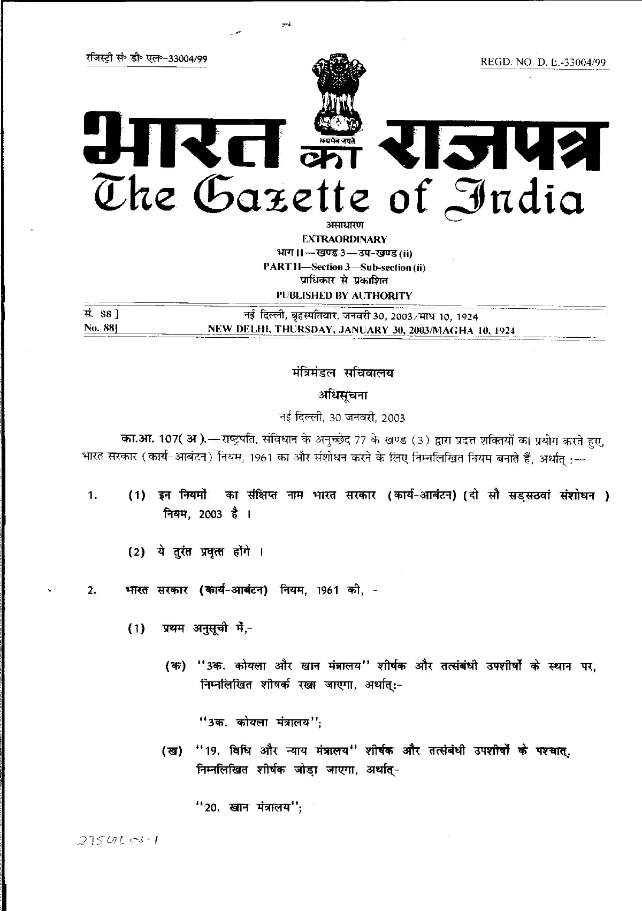
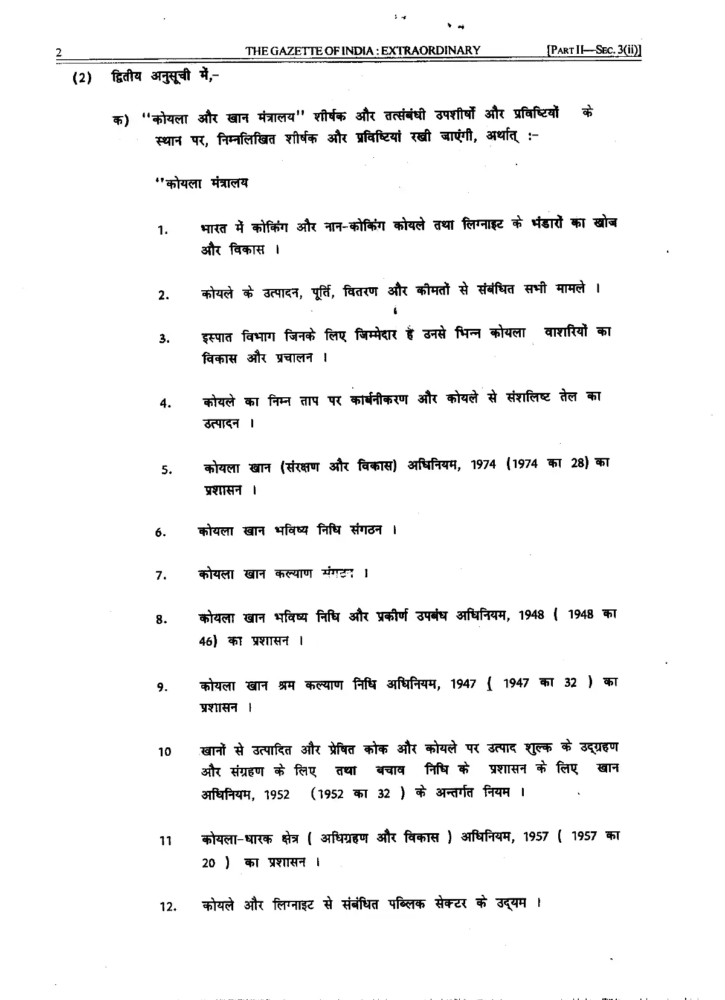
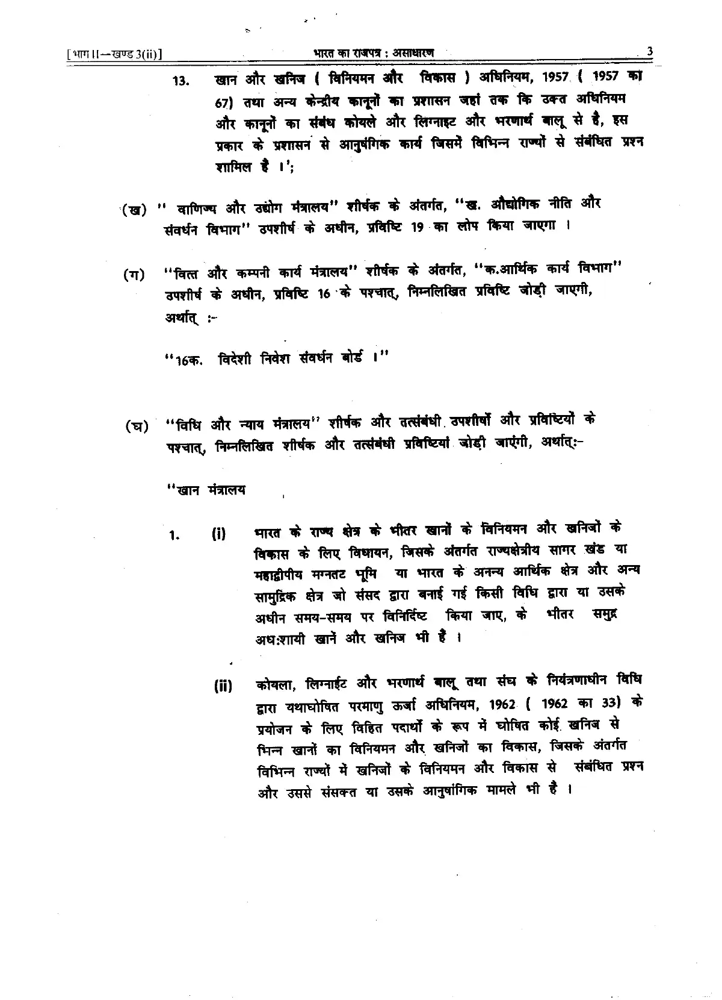
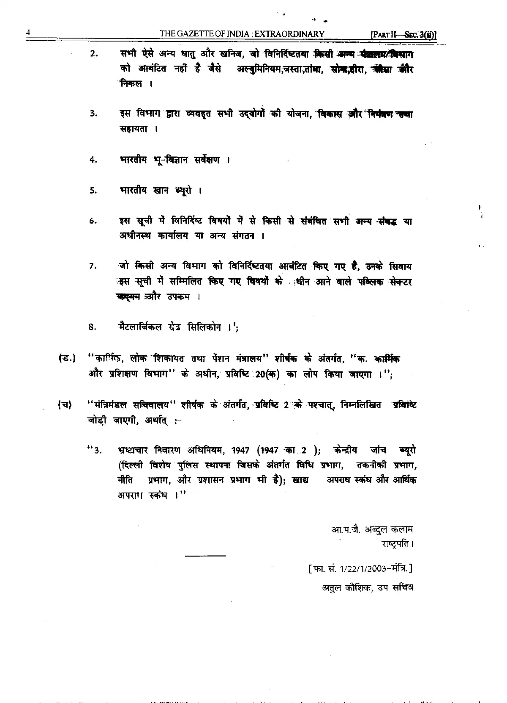
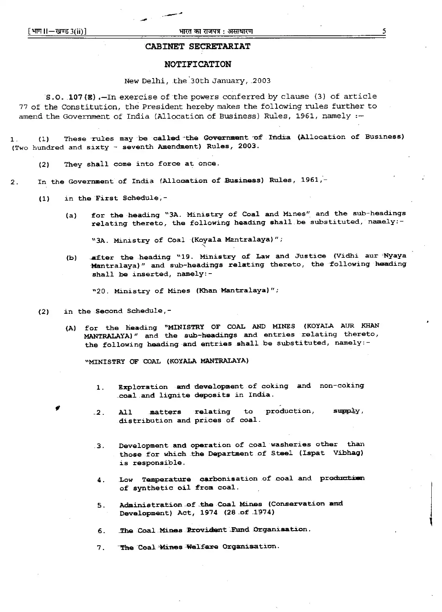
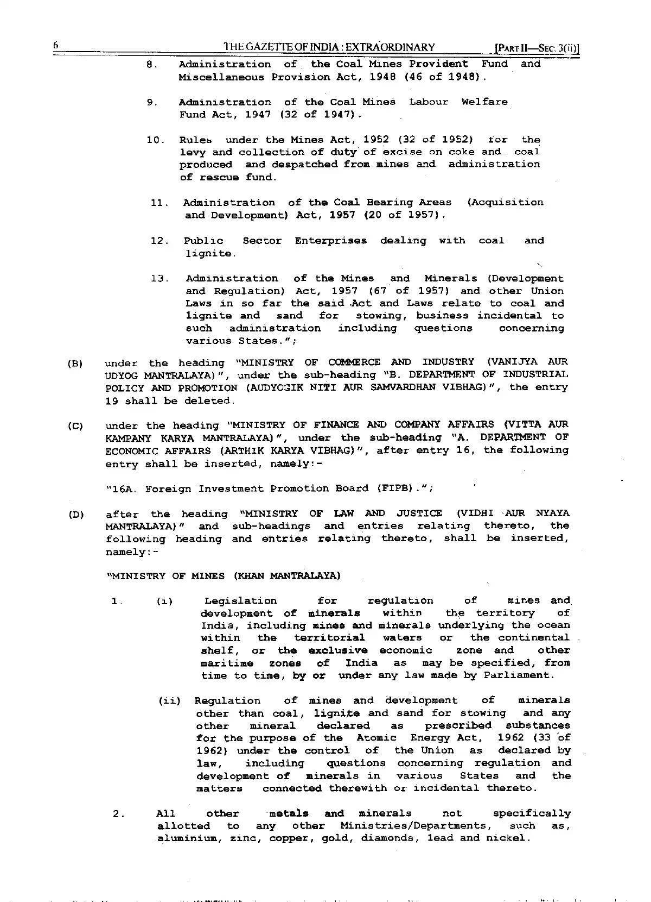
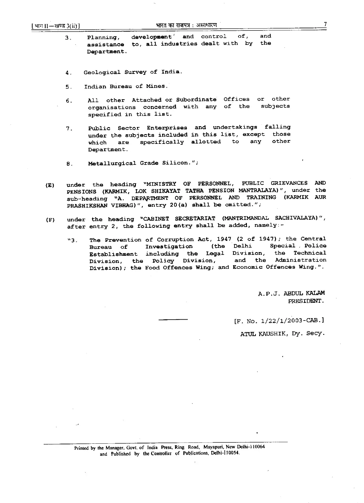

Amendment #267 (S.O. 107(E), 2003)
8 changes: 2 to the First Schedule, 6 to the Second Schedule. 7 applied1 not applied
What it did to the ministries
- splitMinistry of Coal and Mines splits into Ministry of Coal (10) and Ministry of Mines (7) change 1, 2, 3, 6 · histories: Coal and Mines, Coal, Mines
The order, page by page
Page 1 of 7

Page 2 of 7

Page 3 of 7

Page 4 of 7

Page 5 of 7

123Schedule 1 › Ministry of Coal and Mines
- Ministry of Coal
applied at schedule 1 › ministry 3A in the Rules after #267
states inferred number kept
after Schedule 1 › Ministry of Law and Justice
- 20. Ministry of Mines
applied at schedule 1 › ministry 20 in the Rules after #267
Schedule 2 › MINISTRY OF COAL AND MINES
- MINISTRY OF COAL
- 1. Exploration and development of coking and non-coking coal and lignite deposits in India. .2. All matters relating to production, supply distribution and prices of coal. .3. Development and operation of coal washeries other than those for which the Department of Steel (Ispat Vibhag) is responsible.
- 4. Low Temperature carbonisation of coal and productim of synthetic oil from coal.
- 5. Administration of the Coal Mines (Conservation and Development) Act, 1974 (28 of 1974)
- 6. The Coal Mines Provident Fund Organisation.
- 7. The Coal Mines Welfare Organisation.
and 6 more
- 8. Administration of the Coal Mines Provident Fund and Miscellaneous Provision Act, 1948 (46 of 1948).
- 9. Administration of the Coal Mines Labour Welfare Fund Act, 1947 (32 of 1947).
- 10. Rules under the Mines Act, 1952 (32 of 1952) for the levy and collection of duty of excise on coke and coal produced and despatched from mines and administration of rescue fund.
- 11. Administration of the Coal Bearing Areas (Acquisition and Development) Act, 1957 (20 of 1957).
- 12. Public Sector Enterprises dealing with coal and lignite.
- 13. Administration of the Mines and Minerals (Development and Regulation) Act, 1957 (67 of 1957) and other Union Laws in so far the said Act and Laws relate to coal and lignite and sand for stowing, business incidental to such administration including questions concerning various States.
applied at schedule 2 › ministry MINISTRY OF COAL AND MINES in the Rules after #267
read page break
Page 6 of 7

456Schedule 2 › MINISTRY OF COMMERCE AND INDUSTRY › DEPARTMENT OF INDUSTRIAL POLICY AND PROMOTION › entry 19
not applied (the change could not be placed in the Rules as read; see How this document was read)
after Schedule 2 › MINISTRY OF FINANCE AND COMPANY AFFAIRS › DEPARTMENT OF ECONOMIC AFFAIRS › entry 16
- 16A. Foreign Investment Promotion Board (FIPB).
applied at schedule 2 › ministry MINISTRY OF FINANCE AND COMPANY AFFAIRS › department A › group_heading U › entry 16A in the Rules after #267
after Schedule 2 › MINISTRY OF LAW AND JUSTICE
- MINISTRY OF MINES
- 1.
- i. Legislation for regulation of mines and development of minerals within the territory of India, including mines and minerals underlying the ocean within the territorial waters or the continental shelf, or the exclusive economic zone and other maritime zones of India as may be specified, from time…
- ii. Regulation of mines and development of minerals other than coal, lignite and sand for stowing and any other mineral declared as prescribed substances for the purpose of the Atomic Energy Act, 1962 (33 of 1962) under the control of the Union as declared by law including questions concerning…
- 2. All other metals and minerals not specifically allotted to any other Ministries/Departments, such as aluminium, zinc, copper, gold, diamonds, lead and nickel. NII
- 3. Planning, development' and control of, and + assistance to, all industries dealt with by the Department.
and 5 more
- 4. Geological Survey of India.
- 5. Indian Bureau of Mines.
- 6. All other Attached or Subordinate Offices or other organisations concerned with any of the subjects specified in this list.
- 7. Public Sector Enterprises and undertakings falling under the subjects included in this list, except those which are specifically allotted to any other Department.
- 8. Metallurgical Grade Silicon.
applied at schedule 2 › ministry MINISTRY OF MINES in the Rules after #267
read page break
Page 7 of 7

78Schedule 2 › MINISTRY OF PERSONNEL, PUBLIC GRIEVANCES AND PENSIONS › DEPARTMENT OF PERSONNEL AND TRAINING › entry 20 › item a
applied at schedule 2 › ministry Ministry of Personnel Public Grievances and Pen sions (Karmik, lok Shikayat tatha Pension… in the Rules after #267
after Schedule 2 › CABINET SECRETARIAT › entry 2
- 3. The Prevention of Corruption Act, 1947 (2 of 1947); the Central Bureau of Investigation (the Delhi Special Police Establishment including the Legal Division, the Technical Division, the Policy Division and the Administration Division); the Food Offences Wing; and Economic Offences Wing.
applied at schedule 2 › ministry CABINET SECRETARIAT › entry 3 in the Rules after #267
How this document was read
Changes placed by an inference rule
| Change | Rule | Status | What |
|---|---|---|---|
| 1 | number_kept | accepted | change 1: schedule 1 › ministry Ministry of Coal and Mines keeps its number 3A, the heading put for it quoted without one |
Known issues
| Change | Issue | Known as |
|---|---|---|
| 4 | change 4: no entry 19 under schedule 2 › ministry MINISTRY OF COMMERCE AND INDUSTRY › department C | Entries not in the state |
From the Government of India (Allocation of Business) Rules, 1961 and their amendments, as published by the Cabinet Secretariat (cabsec.gov.in), read by orgpedia. The readings of the older scanned gazettes have known gaps.